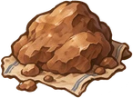

대기함
{{navWip}}
{{ns.label}}
☰
메뉴
소성
🔥 최고 온도
{{heat.temp}}℃
{{heat.hours}}시간
{{heat.riskText}}
요변
낮게
안전
높게
빨리
대기
{{waitN}}
유약 바른 그릇이 여기에 쌓여요
{{tw.badgeText}}
{{tw.name}}
자동
배치
{{capText}}
{{cell.temp}}℃
{{cell.fit}}
{{cell.riskIcon}}
🔒
+
{{door.label}}
{{info.name}}
{{info.match}}
{{info.risk}}
적정 {{info.opt}} · 이 칸 {{info.temp}}℃
{{info.note}}
{{info.riskWhy}}
꺼내기
{{info.hint}}
불 지피기 · {{hours}}시간 · {{count}}점
{{kt.title}}
{{kt.note}}
{{kt.clock}}
가마 열고 꺼내기
바로 완료 · {{kt.cost}}
{{toast}}
{{pk.title}}
{{pk.sub}}
✕
{{pr.check}}
{{pr.name}}
{{pr.meta}}
{{pr.tag}}
{{pr.risk}}
{{pk.emptyText}}
{{pk.emptyLink}}
{{pk.confirmLabel}}
FX_DUST_LAND
◀
{{navPrevName}}
▶
{{navNextName}}
작업 중 · 스와이프 잠김 · 화살표로 이동
공방

채집
제작
의뢰
상점